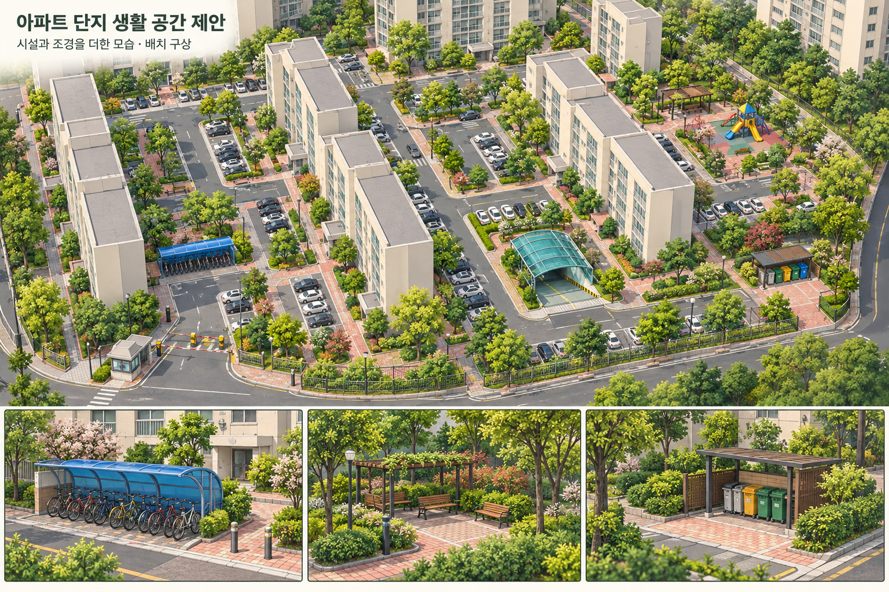

<!doctype html><html lang="ko"><meta charset="utf-8"><meta name="viewport" content="width=device-width,initial-scale=1"><title>아파트 단지 · 규칙 배치 비교</title>
<style>*{box-sizing:border-box}body{margin:0;background:#edf0e7;color:#30483b;font:14px system-ui;height:100dvh;display:flex;flex-direction:column}header{background:#fcfaf2;padding:16px 22px}h1{font-size:22px;margin:0 0 7px}p{margin:5px 0;line-height:1.5}nav{display:flex;gap:7px;flex-wrap:wrap;margin-top:12px}button,select,a{font:inherit}button,select{background:#fffef7;border:1px solid #a9b4a0;border-radius:6px;padding:7px 10px;color:#36503f;cursor:pointer}button[aria-pressed=true]{background:#385e4b;color:white}main{display:grid;grid-template-columns:26% 1fr;flex:1;min-height:300px;gap:2px}main.wide{grid-template-columns:1fr}main.wide aside{display:none}aside,section{position:relative;overflow:hidden;min-height:0}aside{background:#e0e5d7}svg,img{width:100%;height:100%;object-fit:contain}[hidden]{display:none!important}canvas{display:block}.label{position:absolute;top:12px;left:12px;background:#fffef0e8;padding:6px 10px;border-radius:5px;font-size:12px}#status{font-size:12px;color:#62715e}footer{background:#fcfaf2;padding:10px 22px;font-size:12px;line-height:1.6}a{color:#355c45}.bands{display:flex;gap:10px;flex-wrap:wrap}.bands span{border-left:5px solid;padding-left:6px}@media(max-width:750px){body{height:auto}main{grid-template-columns:1fr}aside{height:300px}section{height:520px}}</style>
<script type="importmap">{"imports":{"three":"../../vendor/three.module.js"}}</script>
<header><h1>놀이터와 쉼터가 이어지는 아파트 정원</h1><p>한 구역을 먼저 다듬었습니다. 산책로를 따라 놀이터·쉼터·벤치와 나무·관목·꽃이 이어집니다.</p><nav><button id="pilot">완성한 정원 보기</button><button id="pilotDetail">쉼터와 꽃 가까이 보기</button><button id="pilotBefore">정원 개선 전 보기</button><button id="near">동 주변 보기</button><button id="overview">전체 단지 보기</button><button id="top">위에서 보기</button><button id="low" aria-pressed="false">건물 낮춰 배치 확인</button><select id="facility" aria-label="시설 가까이 보기"><option value="">시설 가까이 보기</option><option value="bike">자전거 보관소</option><option value="play">놀이터</option><option value="pergola">쉼터</option><option value="recycling">분리수거장</option><option value="ramp">지하주차장 입구</option><option value="guard">경비실</option></select><button id="wide">배치도 접기 / 펼치기</button><button id="map">생성 배치도 보기</button><button hidden id="green">녹지 바닥 표시 전환</button></nav><p id="status">새 배치 자료를 읽고 있습니다.</p></header>
<main><aside><svg hidden id="diagram" aria-label="건물 기준으로 새로 생성한 배치도"></svg><span class="label">목표 이미지 · 정원과 생활 공간</span></aside><section id="view"><span class="label" id="heightNote">건물 실제 비율</span></section></main>
<footer><div class="bands"><span style="border-color:#91a67b">큰 나무와 꽃나무</span><span style="border-color:#d9c8b0">놀이터를 도는 산책로</span><span style="border-color:#c3949c">꽃과 관목이 겹치는 화단</span><span style="border-color:#8e9691">벤치와 목재 쉼터</span></div>한 구역에 세부 조경을 추가했습니다. 목표 이미지와 나란히 살펴보거나 같은 시점에서 개선 전·후를 전환할 수 있습니다.<br><a href="mapped.html">이전 지도 재현 방식과 비교</a> · <a href="living-catalog.json">시설 에셋과 제작 근거</a> · <a href="rule-notes.txt">배치 규칙</a> · <a href="rule-validation.json">생성 결과</a> · 지면 높낮이와 지하 내부는 생략했습니다.</footer><script type="module" src="rule-viewer.js"></script></html>
